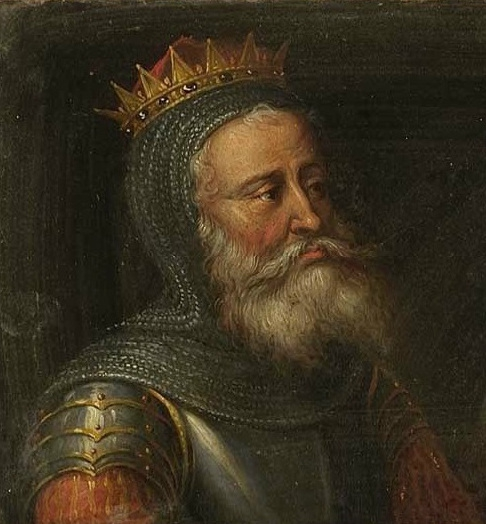

49226811586 Count Godfrey I of Verdun & Bidgau & Ardennes
Greve.
Far:
Mor:
Född:
omkring 930. [1]
Död:
efter 1005-09-03. [1]
Barn med 49226811587 Countess Mathilde of Flandern (937 - 1008)
Barn:
Noteringar
Godfrey I, greve av Verdun
Anslutet till: Oda av MetzGozlin, greve av Bidgau och MethingauSuverän
Från Wikipedia, den fria encyklopedin
Godfrey I, greve av Verdun
Ett porträtt av Godefroy Ier comte de Verdun
dog 1002
Adlig familj Huset Ardennes-Verdun
Makar) Matilda av Sachsen
Far Gozlin, greve av Bidgau och Methingau
Mor Oda av Metz
Godfrey I (död 1002), kallad fången eller den företagsinterna [1] ( le Captif ), ibland den gamla ( le Vieux ), var räkningen av Bidgau och Methingau från 959 och stats räkningen av Verdun [2] [3] 963 till sin död. År 969 erhöll han markgreviatet i Antwerpen och Ename . Mellan 974 och 998 var han också den suveräna greve av Hainault och Mons . Han var son till Gozlin, greve av Bidgau och Methingau , och Oda av Metz . [4]Han var bror till Adalberon, ärkebiskop av Reims , som krönte Hugh Capet att kungen av Frankrike .
Han var grundaren av huset Ardennes-Verdun , en kadettgren av huset Ardennes . Han var alltid lojal mot Ottonierna , som han var släkt med genom sin mormor.
Liv
Han är stilad som greve genom Guds nåd av [1] i 963 och redan räknar med Bidgau och Methingau genom arv sedan 959. I 974, blev han räkna till Mons och Hainault tillsammans med Arnold , greve av Valenciennes , efter nedgången av Reginar IV . Charles, hertig av Lower Lorraine , var en anhängare av Reginar och besegrade Godfrey och Arnold vid Mons 976, där den förstnämnde tillfångatogs.
Efter frigivningen stod han vid sidan av kejsar Otto II som kämpade mot Lothair av Frankrike vid Verdun 985, men han togs återigen till fånga, tillsammans med sin son Fredrik, och hölls i flera år. [5] [6] Han släpptes 987 av Hugh Capet, vars politiska allierade var Adalberon, Godfreys bror, [7] efter att ha krönt Hugh och Godfrey som en fiende till Charles av Lower Lorraine, Hughs karolingiska rival. [7]
År 989 gjordes han till fånge en tredje gång av Herbert III av Vermandois . Han befriades före 995, då han framträder på synoden i Mousson . 998 förlorade han sin Hainault-del (grevskapet Mons) till Reginar IV.
Familj
År 963 gifte han sig Matilda , dotter till Herman, hertig av Sachsen , av familjen Billung , en änka efter Baldwin III av Flandern . [8] Han hade följande problem:
Fredrik (d. 1022), greve av Verdun [9]
Godfrey (d. 1023), hertig av Nedre Lorraine (1012–1023) [9]
Adalberon (d. 988), biskop av Verdun (984–988) [10]
Herman av Ename (d. 1024), greve av Brabant (pensionerad som munk i klostret Verdun ca 1022) [9]
Gothelo (d. 1044), markgreve av Antwerpen, hertig av Nedre (1023–1044) och senare även Övre (1033–1044) Lorraine
Ermengarde (d. 1042), gift med Otto av Hammerstein, greve i Wettergau
Troligen Ermentrude, som gifte sig med Arnold de Rumigny (d. 1010), herre över Florennes
Adela, gift med greve Godizo av Aspelt . Deras dotter Irmgard gifte sig med Berthold von Walbeck, son till Lothar I, markgreve av Nordmarken .
Personhistoria
Bilder